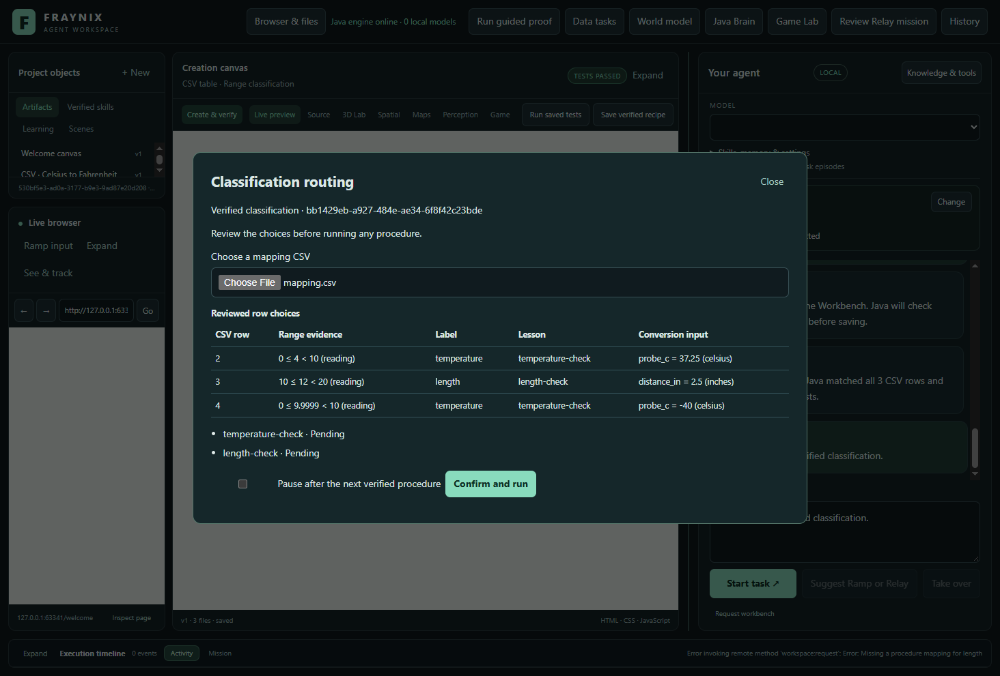
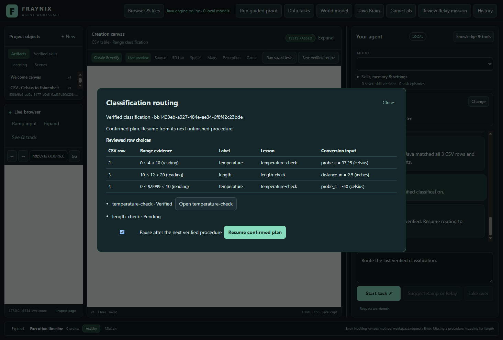
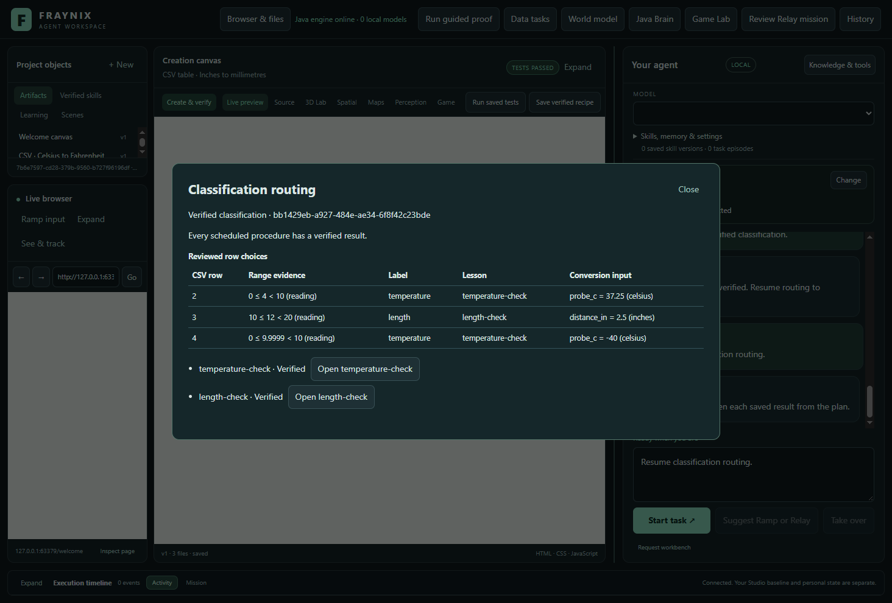

Route verified classifications to approved procedures
Attach a mapping from classification labels to verified conversion lessons. Review the reason and exact input for each choice, then approve the plan.

The plan previews the classification, range and exact input for each row

The first conversion is verified while the other is pending

Both verified artifacts are available after desktop restart
System files
Open source